AfterGlow
A protective face shield for people recovering from aesthetic treatments.
View full process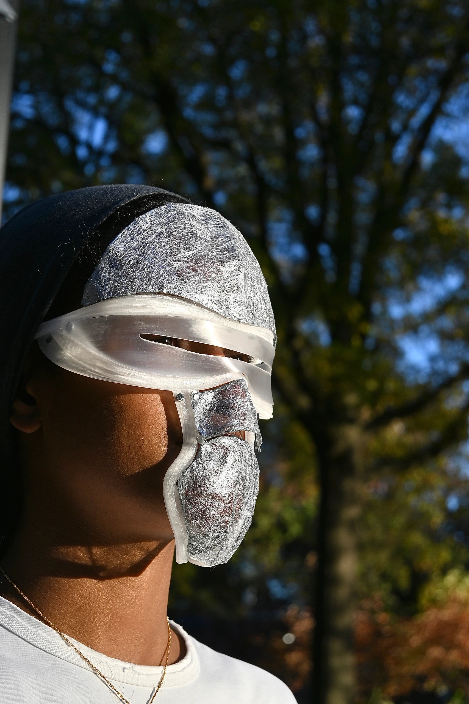
Market Size
The global medical aesthetics market was valued at USD 82.46 billion in 2023 and is expected to reach USD 143.3 billion by 2030.
Rising interest in:
- non-invasive treatments
- personalized care
- emotional well-being in aesthetic services
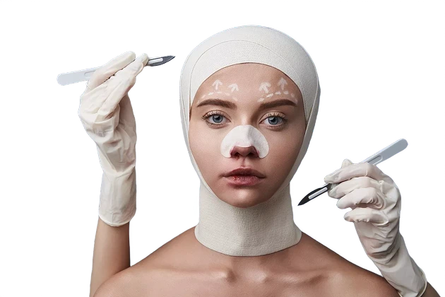
The Problem
Post-Procedure Reality
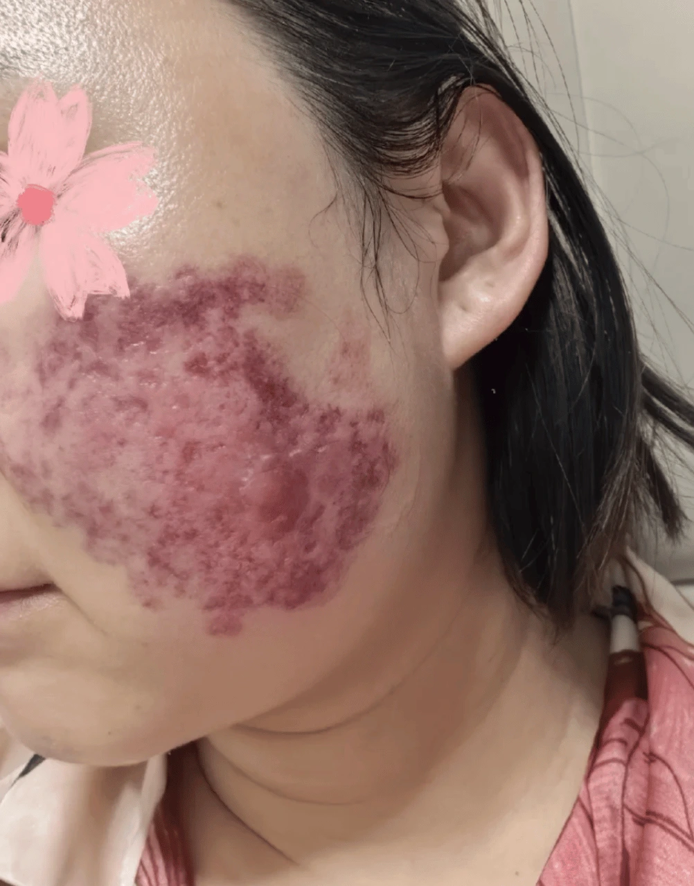
After non-invasive aesthetic treatments, patients experience visible redness, sensitivity, and healing scars that require careful protection from sun exposure and physical contact.
Current Solutions Fall Short
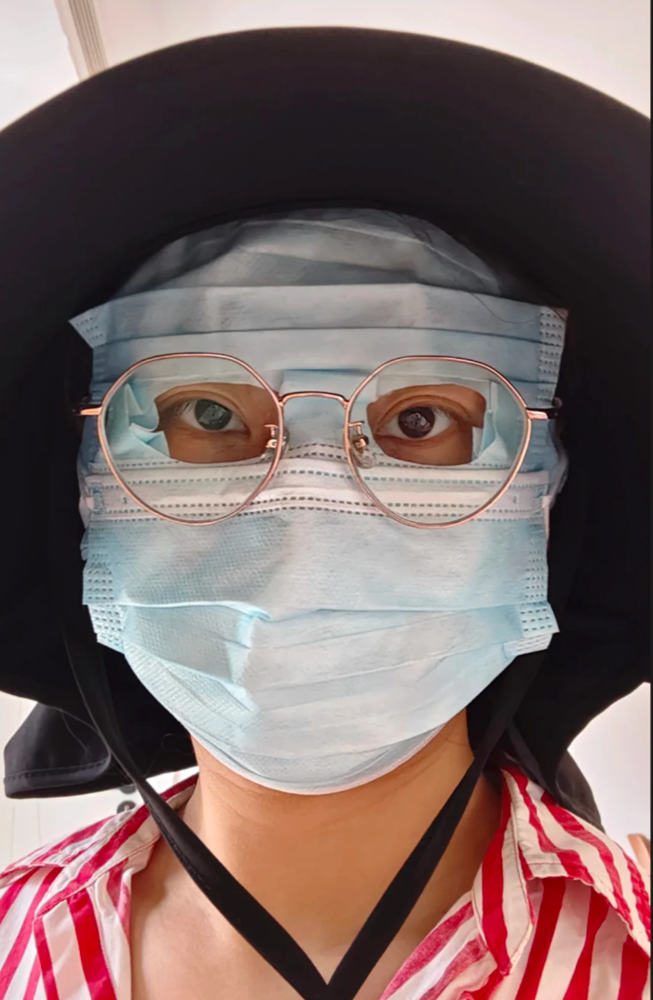
Traditional medical masks and hats provide inadequate protection. They trap heat, stick to healing skin, and draw unwanted attention — making recovery both physically uncomfortable and emotionally challenging.
Competitors Analysis
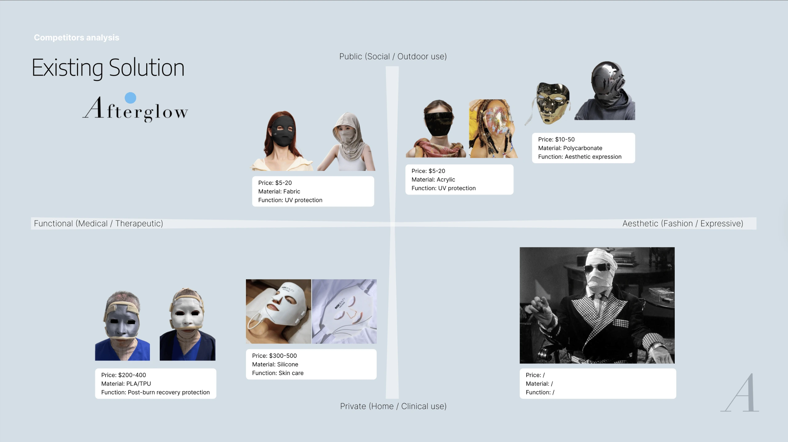
Research Question
How might we design a face shield that both protects sensitive post-procedure skin and empowers users to feel confident in social settings during recovery?
User Research
From the 67 replies I got from surveys and interviews, I identified key pain points and user needs:
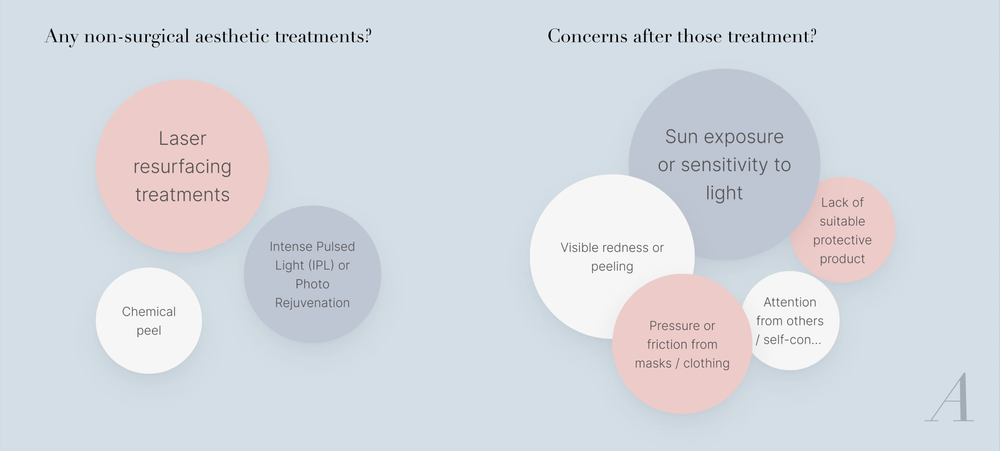
Persona
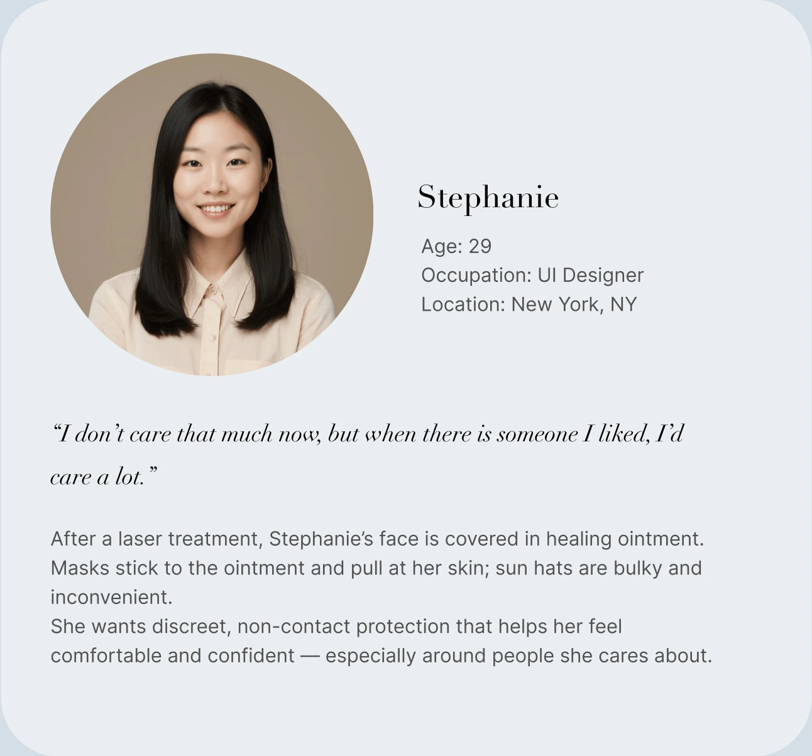
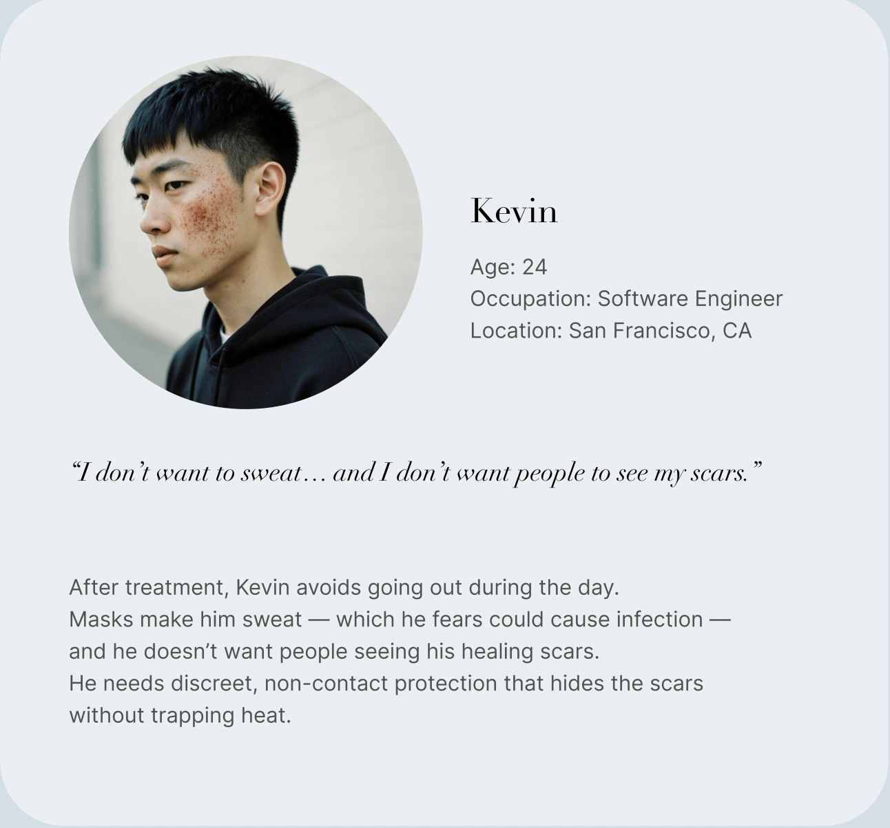
Prototype
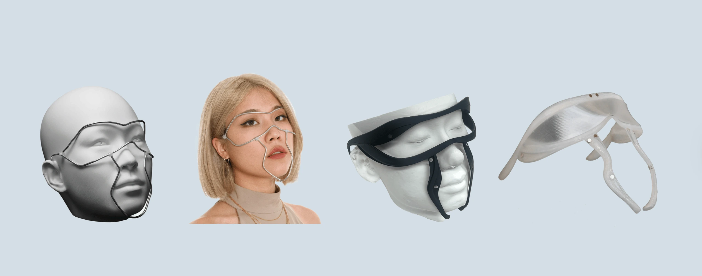
Branding
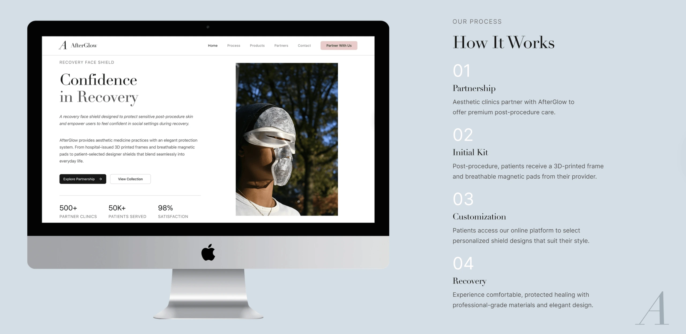
Hero Shot
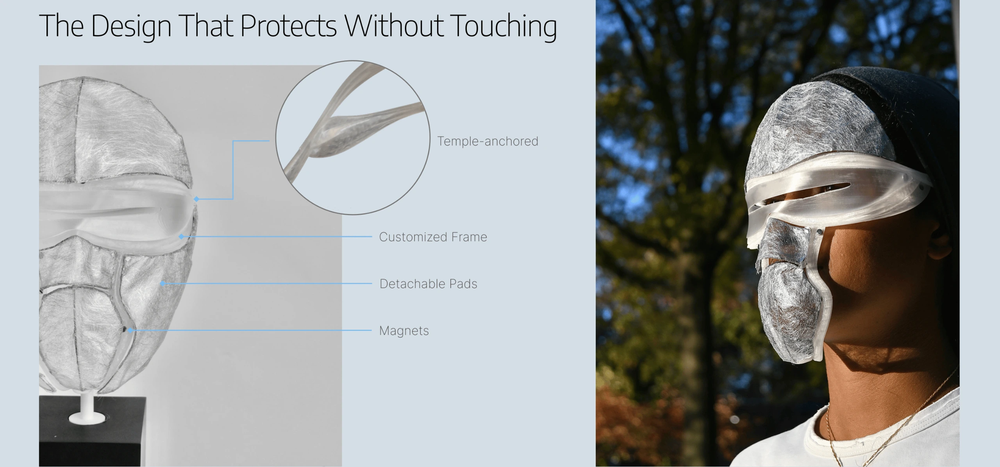
Design Principles
Non-Contact Protection
Shield sensitive post-procedure skin without physical contact, preventing irritation and allowing natural healing.
Breathable Design
Minimize heat buildup to prevent sweating and reduce infection risk during recovery.
Discreet & Confident
Empower users to maintain their daily routines and social interactions with confidence during the healing process.
Sun Protection
Provide effective UV protection to prevent hyperpigmentation and support optimal healing outcomes.
Next Steps
The research phase has established a strong foundation for the AfterGlow face shield design. Moving forward, the project will focus on:
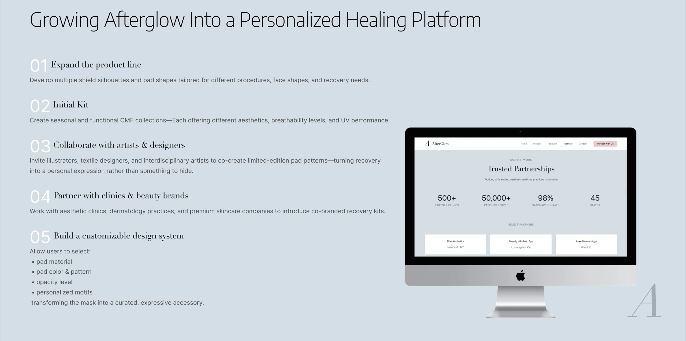